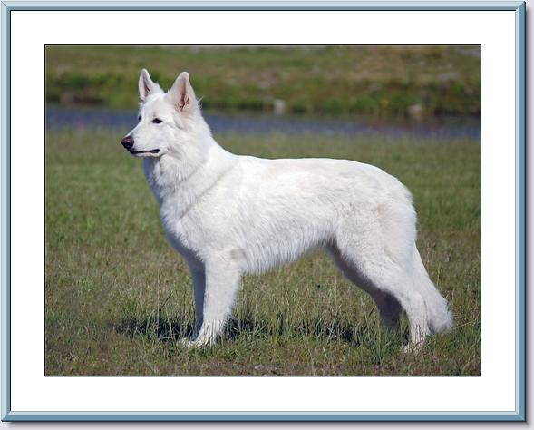

NELLIN NÄYTTELYTULOKSET

17.09.2006 ORIVESI / pentunäyttely Kirsi Nieminen KP, ROP-pentu
Erinomaista tyyppiä oleva pentu, jolla oikeat rungon mittasuhteet. Hyvä pää, erinomainen ylälinja. Syvä rintakehä ja hyvä runko. Vahva raajaluusto. Erinomaiset kulmaukset. Liikkuu hyvällä askelpituudella. Hyvä karvapeite. Miellyttävä luonne. Esiintyy erinomaisesti.
29.10.2006 LAHTI / pentunäyttely J.A.U. Yrjölä PEK-3
Pidempikarvainen narttupentu. Erittäin hyvän tyyppinen. Hieman liioiteltu pituus. Kaunis pää. Leikkaava purenta. Hyvin pitkä lanneosa. Riittävät kulmaukset. Erinomainen karvapeite. Kaunis häntä. Hyvä väritys. Hieman lyhytaskelinen ravi.
04.11.2006 SEINÄJOKI KV / pennut Jaana Hartus KP, ROP-pentu
Erittäin tasapainoinen, lupaavaluustoinen pentu, jolla nyt oikeat mittasuhteet. Vielä lapsenkasvoinen. Hyvä kaula ja ylälinja. Hyvät raajat ja käpälät. Lupaavat kulmaukset, samoin sivuliikkeet. Karvapeite tulossa.
19.11.2006 JYVÄSKYLÄ KV / pennut Paula Heikkinen-Lehkonen KP, PEK-2
Erittäin kaunis pitkäkarvainen narttu. Erinomainen rakenne ja mittasuhteet. Pitkä pää, loiva otsapenger. Pigmentti haalistunut. Hyvät raajojen kulmaukset. Suora selkä. Hieman kapeat takaliikkeet. Erittäin kaunis turkki ja väri. Varma ja avoin käytös.
09.12.2006 HELSINKI KV VOITTAJA 2006 / junioriluokka Eva Eriksson, Ruotsi JUN-ERI, JUK-1, PN-2, VARA-SERT, JUNIORIVOITTAJA 2006
Feminiini narttu, jolla erinomaiset mittasuhteet. Kaunis pää ja tummat ilmeikkäät silmät. Hyvinkannetut (=välburna) korvat. Erinomainen runko ja luusto, hyvä selkä ja lanne, hyvät kulmaukset. Liikkuu hyvin askelin sivulta. Hyvä väri.
Feminin tik med utmärkta proportioner. Vackert huvud. Mörka utrycksfulla ögon. Välburna öron. Utmärkt kropp och benstommer. Bra rygg och kors. Fina vinklar. Rör sig med bra steg från sidan. Bra färg.
14.04.2007 VAASA KV / junioriluokka Cristian Stavarache, Romania JUN-ERI, JUK-1, PN-1, SERTTI, ROP
Hyvä tyyppi, vahva ja voimakas. Normaali purenta. "Winternose". Hyvän väriset silmät, hyvän väriset huulet. Hyväasentoiset korvat. Hyvät rungon mittasuhteet. Etu- ja takaosa hyvin kulmautuneet. Hyvä karvanlaatu ja hyvä väri. Hyvä luonne. Hyvät liikkeet.
Good type, strong, powerfull. Normal bite. Winternose. Good color eyes, good color lips. Ears good setted. Body with good proportions. Hind and front quarters: in stand well angulated. Good quality coat, good color. Good temperament, good movements.
03.06.2007 TUURI KR / junioriluokka Elena Ruskovaara JUN-EH, JUK-1
Erinomainen tyyppi, hyvät mittasuhteet ja oikea raajaluusto. Erittäin feminiini. Oikeailmeinen pää. Hyvät korvat, hieman vaalea kirsupigmentti. Kaunis ylälinja, hyvin kulmautuneet raajat. Rintakehä litteä. Hiukan kinnerahtautta takana. Pitkä häntä, joka voisi olla alempana (liikkeessä?). Liikkuu hyvällä askelpituudella. Miellyttävä käytös.
09.06.2007 KANGASNIEMI KR / junioriluokka Raija Tammelin JUN-EH, JUK-1
Feminiininen, hyvät mittasuhteet, vielä ilmava juniori. Hyvät pään linjat ja pigmentti sekä korvien kiinnitys. Kaunis kaula, hyvä selkä, luisu lantio. Hyvät taka- ja melko hyvät etukulmaukset, sopiva luusto. Kylkiluut saavat kaartua iän myötä. Hyvät sivuliikkeet, kinnerahdas takaa. Hyvä karva ja luonne.
10.06.2007 JÄMSÄNKOSKI KR / junioriluokka Anneli Sutela JUN-ERI, JUK-1, PN-2, VARA-SERT
Erinomainen tyyppi. Hyvä pään kiila ja purenta. Riittävä kaula, ylälinja ja runko. Hyvin kulmautunut. Riittävä luusto. Liikkuu hyvällä askeleella yhdensuuntaisesti. Hieman pehmeä karvapeite. Esiintyy ja esitetään erinomaisesti.
14.07.2007 ORIVESI KR / junioriluokka Jaana Hartus JUN-ERI, JUK-2, PN-2, VARA-SERT
Erinomainen rotutyyppi. Erinomaiset mittasuhteet ja raajaluusto. Ilmeikäs pää, kuono saa vielä täytelöityä. Hyvin kaunis sivukuva. Runko saa vielä täytelöityä. Erinomaiset kulmaukset, samoin sivuliikkeet. Karvapeite vaihtumassa.
28.07.2007 PORI KV / junioriluokka Manuel Loureiro Borges, Portugali JUN-ERI, JUK-1, PN-1, ROP, SERTTI
Hyvän tyyppinen, feminiini. Hyvä pää ja ilme (expression), hyvä pigmentti. Hyvä karva. Hyvät kaula ja ylälinja, hyvä etupää. Hyvin kulmautunut. Riittävä luusto. Liikkuu hyvin, mutta kantaa häntää (liikkeessä) hiukan liian korkealla.
Nice type, feminine, nice head and expression. Good pigmentation. Nice coat. Good neck and topline. Good front. Well angulated. Enough bone. Good mover but carrying the tail a bit too high.
18.08.2007 NOKIA RY / junioriluokka Maret Kärdi, Viro JUN-ERI, JUK-1, PN-1, ROP, SERTTI
Erinomaista rotutyyppiä edustava sopusuhtainen ja kevyesti liikkuva narttu. Hyvä raajaluusto ja erinomaiset kulmaukset. Toivoisin leveämmän ja tasaisemman kallo-osan. Pähkinänruskeat ilmeikkäät silmät. Hyvät suupigmentit, hieman vaalentuneet kirsussa. Ryhdikäs kaula, erinomainen ylälinja ja lantiorakenne. Edukseen esitetty. Hyvä luonne. Riittävän puhdasvärinen karvapeite.
30.09.2007 HYVINKÄÄ, SSKY:N ERIKOISNÄYTTELY, VALKOISTENPAIMENKOIRIEN EPÄVIRALLINEN ERIKOISNÄYTTELY / nuortenluokka Harry Tast NUO-ERI, NUK-1, PN-1, ROP, SERTTI
Laatunarttu. Voimakas ja tyylikäs kokonaisuus. Oikeat mittasuhteet ja tasapainoiset linjat päässä ja rungossa. Puutteellinen kirsu- ja huulipigmentti. Raajoissa erinomaiset kulmaukset ja luusto. Hyvä karvan laatu ja puhdas väri. Joustavat ja tehokkaat nuoren koiran liikkeet.
17.11.2007 JYVÄSKYLÄ KV / nuortenluokka Jaana Hartus NUO-ERI, NUK-1, PN-3, VARA-SERT, VARA-CACIB
Mittasuhteiltaan oikea, lupaavaluustoinen, vielä kesken kehityksen, nuori narttu. Oikea silhuetti. Ilmeikäs nuoren koiran pää. Oikea ylälinja. Tasapainoiset kulmaukset ja sivuliikkeet. Hieman ahdas edestä ja takaa. Hieman ylös kiinnittynyt häntä. Hyvä karva.
09.12.2007 HELSINKI VOITTAJA 2007 / nuortenluokka Göran Bodegård, Ruotsi NUO-ERI, NUK-3
Hieman suuri, kauniisti esitetty, hoikassa kunnossa. Hyvät kulmaukset edessä ja takana, hieman korkea hännän asento, erittäin kauniit sivuliikkeet.
Något stor, vackert visad, mager kondition. Snygga vinklar fram och bak. Något hög svansföring. Mycket vackra rörelser från sidan.
26.4.2008 LAHTI KV / avoinluokka Rony Doedijins, Hollanti AVO-ERI, AVK-3
Erittäin hyvin rakentunut narttu jolla on hyvä luusto ja massa. Feminiini pää jossa tyypillinen ilme. Pigmentti voisi olla syvempi. Steering out a little with right foot (??). Erittäin hyvä ylälinja, tyypilliset kulmaukset. Ahdas takaa. Needs more drive but has a lot of reach (??). Kaunis turkki, ihastuttava temperamentti.
Very well constructed bitch with good bone and substance. Feminine head with typical expression. Pigmentation could be more intense. Steering out a littele with right foot. Very good level topline. Typical angulation. Narrow behind. Needs more drive but has a lot of reach. Beautiful coat, lovely temperament.
04.05.2008 VIITASAARI RY / avoinluokka Jaana Hartus AVO-ERI, AVK-1, PN-4
Erinomainen tyyppi, oikeat mittasuhteet, tasapainoinen luusto. Erinomainen lihaskunto. Hieman kapealinjainen pää, oikea ilme. Hyvä ylälinja, voimakkaat kulmaukset, pitkät maatavoittavat sivuliikkeet. Hyvä karva.
03.07.2008 BERGER BLANC SUISSE WORLD CHAMPIONCHIPSHOW 2008, Tukholma / avoinluokka, open class Peter Machetanz, Saksa AVO-ERI, AVK-3 / EXCELLENT-3
Nearly 2,5 years. Female expression. Correct head. Brown eyes. Very good pigmentation. Correct topline. Very good front. Correct muscle and angulations. Correct coat and color. Friendly temperament. Very good movement.
04.07.2008 WORLD DOG SHOW 2008, Tukholma / avoinluokka, open class Nina Karlsdotter, Ruotsi AVO-ERI, AVK-3 / EXCELLENT-3
Långsträck välformad feminin huvud, stoppet kunde vara lite mera dostinkd. Välformad mörka ögon. Pigment ok. Bra öron, vacker hals och överdock. Något kort kors och ibland lite hög svan i rörelse. Bra kropp, något lång iländen (?), bra benst, fina fötter och mellanarm. Utmärkt långt steg, bra päls och färg.
01.08.2008 KUOPIO KV / avoinluokka Peter Machetanz, Saksa AVO-ERI, AVK-1, PN-3, VARA-SERT
2,5 jahre, korrekte Rassetyp, korrekte Kopf mit braunen Angen und ausveichenden Pigment. Korrekte Oberlinie, sehr gute Front, korrekte Haar und Farbe. Freundliches Lesen, flottes gangwerk, hinter leicht Ang.
02.08.2008 KUOPIO KV / avoinluokka Zlatko Kraljic, Kroatia AVO-ERI, AVK-1, PN-1, SERTTI, ROP
Hyvin rakentunut narttu. Korrekti pää, hyvä pigmentti. Hyvä ylälinja. Korrekti liikunta.
Well built female. Correct head. Good pigment. Good topline. Correct movement.
03.08.2008 KUOPIO KV / avoinluokka Jochen H Eberhardt, Saksa AVO-ERI, AVK-1, PN-1, ROP
Very nice bitch. Excellent reach and drive. Very nice outline, superbe proportiones, beautiful head, dark eyes, reliable ear carriage. Excellent neck and body. Front placed not parallel. Excellent bone and angulation, nice coat, steady temperament.
10.08.2008 SAARIJÄRVI KR / avoinluokka Roel van Veen, Hollanti AVO-ERI, AVK-1, PN-1, ROP
2,5 years. Excellent bitch. Nice head shape. Correct bite. Brown eyes, good ears, good lip pigment and feet and nails. Good body and angulation, good forechest. Strong bone and feet. Moves with drive, a little close behind and a little high carried tail.
01.11.2008 VANTAA, SSKY:N ERIKOISNÄYTTELY, VALKOISTENPAIMENKOIRIEN EPÄVIRALLINEN ERIKOISNÄYTTELY / valioluokka Tanya Ahlman-Stockmari VAL-ERI, VAK-1, PN-3
Erittäin tasapainoisesti liikkuva, hyvän kokoinen. Erinomaiset rungon mittasuhteet ja raajakorkeus. Erinomaiset pään linjat, oikea ilme, vaalea kirsupigmentti. Riittävä eturinta. Hyvä raajaluusto, kokoon sopiva runko. Hyvä lihaskunto, erinomainen karvapeite. Matala kinner, hyvät kootut käpälät. Hyvä käytös. Voisi olla lyhyempi lanne, hyvä ylälinja.
13.12.2008 HELSINKI, VOITTAJA 2008 / valioluokka Paavo Mattila VAL-ERI, VAK-2
Hyvin rakentunut kookas narttu. Hyvä pää, kaunis kaula, erinomainen ylälinja. Hyvä sopusuhtainen runko. Erittäin hyvät raajat. Kaunis karva. Hyvät sivuliikkeet, hieman ahtaat takaa. Miellyttävä luonne.
12.12.2009 HELSINKI, VOITTAJA 2009 / valioluokka Harry Tast VAL-H
Kookas narttu, jolla oikeat mittasuhteet päässä ja rungossa. Vaalea kirsu- ja huulipigmentti. Kaunis kaulan liittymä, jyrkkä latio ja korkea häntä liikkeessä. Takaliikkeet kovin ahtaat ja kyynärpäät ulkokierteiset, takaliikkeistä puuttuu draivi.
13.12.2009 HELSINKI, POHJOISMAIDEN VOITTAJA 2009 / valioluokka Carsten Birk, Tanska VAL-ERI, VAK-4
Over middle size, good proportion. Nice expression with dark eyes. Excellent muzzle, well carried ears, good bite. Excellent neck and topline. Good angulation and bone. Beautiful colour and coat. Tail carried high. Free mover. Good temperament.
13.02.2010 TALLINNA KV, VIRO / valioluokka, champion class Katarzyna Fiszdon, Puola EXC-1, CAC, CACIB, EE MVA
Strong powerful bitch, with very nice feminine head. Firm topline, strong chest, very good bones, parallel front legs. I would prefer more parallel back legs too.
11.07.2010 GÄLLIVARE KV, RUOTSI / avoin luokka, open class Janiki Steinbock, Israel AVO-1, CK, CERT, ROP (BIR), SE MVA, RYP3 (BIG3)
Correct size and nicely built. Excellent head, expression and pigment. Elegant neck and topline. Nice ribcage and good bone. Well angulated. Moves a bit tight behind, but pushes well.
07.08.2010 SAWO SHOW KV, Kuopio / valioluokka Liliane de Ridder-Onghena, Belgia VAL-ERI, VAK-1, PN-1, ROP, CACIB, RYP-2
4,5 years. Scissors bite. Nice head, good ear set. Rich pigment. Good reach neck, very nice front, well indicated withers. Nice topline and croup. Well indicated hindquarters. Nice coat. Moves well, nicely handled.
08.08.2010 SAWO SHOW KV, Kuopio / valioluokka Elina Haapaniemi VAL-ERI, VAK-1, PN-2
4 vuotias, erittäin hyvän tyyppinen, sopivan voimakas, aavistuksen pitkä narttu. Erinomainen pää, silmät ja ilme. Kauniisti kannetut korvat. Hyvä purenta. Vahva luusto, aavistuksen ranskalainen edestä. Hieman pitkä lanne. Hyvät takakulmaukset, ahtaat takaliikkeet. Hyvä ulottuvuus sivuliikkeessä. Riittävän puhdas väri.
13.11.2010 JYVÄSKYLÄ KV / valioluokka Soile Bister VAL-H
Pitkärunkoinen vahva narttu, joka saisi seistä tukevammin takajaloillaan. Pään linjat yhdensuuntaisemmat. Hyvä pigmentti, korvat. Liikkuessa korkea-asentoinen häntä. Puhtaampi väri. Liikkuessa parempi takatyöntö. Hyvä luonne.
11.12.2010 HELSINKI WINNER KV / valioluokka Andrzej Kazmierski, Puola VAL-ERI, VAK-1, PN-1, ROP, CACIB, HELSINKI WINNER 2010
Proportional, very feminine expression, sweet and happy, moves freely, excellently and professionally presented.
12.12.2010 HELSINKI, VOITTAJA KV / valioluokka Tanya Ahlman-Stockmari VAL-EH
Hyvänkokoinen narttu. Pitkä kapealinjainen pää, hieman kevyt alaleuka. Riittävästi kulmautunut edestä. Hyvä eturinta. Riittävä runko, oikea karvapeitteen laatu. Hyvät takaraajat kulmauksineen. Erinomaiset ranteet ja käpälät. Valitettavasti kovin ahtaat takaliikkeet. Yhdensuuntaiset etuliikkeet. Liian voimakkaasti kuroutunut alalinja. Hyvä ryhti.
22.4.2011 LAHTI KV / valioluokka Margorzata Supronowicz, Puola VAL-ERI, VAK-1, SA, PN-2, VARA-CACIB
5 years old, in excellent show condition. Beautiful head, excellent topline. A little too high tail. Well angulated front and rear. Fluent sidegate. Quite narrow behind. Nicely shown.
07.05.2011 TAMPERE KV / valioluokka Katharina Schweizer, Sveitsi VAL-EH
Erittäin hyvänkokoinen narttu. Sopiva luusto, erinomainen karvapeite. Hieman laskeva selkälinja. Erittäin hyvänmuotoinen rintakehä. Oikea-asentoiset ja oikein kulmautuneet raajat. Liikkeitä ei voi arvostella, koska narttu haluaa koko ajan ulos kehästä, johtuen todennäköisesti kehän ulkopuolisesta avustajasta. Käytös on silti juuri ja juuri hyväksyttävää. (Suomennettu alkuperäisestä saksankielisestä arvostelusta).
28.07.2011 VEJEN INT, TANSKA / valioluokka Tamás Jakkel, Unkari VAL-EH
I would prefer a bit more breed type, feminin head but narrow scull, too rounded forehead, good shoulders, long body, shallow chest, lacking the substance but moves well.
29.07.2011 VEJEN INT, TANSKA / valioluokka Johan Juslin, Suomi VAL-ERI, VAK-2, SA, PN-3
Utmärkt model på en vacker tike, mörke ögon, korrekt pels struktur, acceptable pigment på nosen, muskulöse lår, race tykiske rörelser, mager kondition, liniärt vacker tike.
30.07.2011 VEJEN INT, TANSKA / valioluokka Rony Doedijns, Hollanti VAL-ERI, VAK-1, SA, PN-1, CAC, CACIB, ROP, DK MVA, POHJ MVA
Beautifull bitch, lovely in type, size and temperament. Very nice in proportions, very elegant, lovely headprofile with typical expression. Typical top and underline, correct in front and rearangulation. Coat in summer condition, but the structure and the cindicien (?) is excellent. Very easy mover, but a bit narrow behind. Sideaction very expressive, nice temperament.
03.12.2011 HELSINKI WINNER -11 / valioluokka Maritha Östlund-Holmsten, Ruotsi VAL-ERI
5 år, stor, bra proportioner. Feminint huvud med tillräcklig paralellitet. Mörka välformade ögön. Något små välplacerade öron, vinternäsa. Välbyggd med bra vinklar och borde därför röra sig mod ett bättre steg och påskict (?) lång svans. Skulle ha vitare färg, hög svans.
04.12.2011 VOITTAJA 2011 / valioluokka Julia Ovsyannikova, Venäjä VAL-ERI, VAK3, SA
Very nice type, correct size and format. Very good condition. Excellent coat. Very good head, enough correct pigmentation. Good ears. Correct neck. Very nice forebrest. Typical topline. Forelegs slightly narrow behind. Correct step.
22.02.2014 JYVÄSKYLÄ KV / veteraaniluokka Paula Heikkinen-Lehkonen VET-ERI, VEK1, ROP-veteraani
Vahva pitkärunkoinen narttu. Erinomainen luusto. Pitkä suoralinjainen pää, täyteläinen kuono. Pigmentti hieman haalistunut. Tummat silmät. Hyvin täyttynyt eturinta ja erinomainen lapakulmaus. Syvä ja tilava rintakehä. Pitkä lanneosa. Erinomaiset takakulmaukset. Tiiviit käpälät. Hieman kapeat takaliikkeet, mutta sivulta katsoen liikkuu vetävästi. Kaunis turkki, mutta väri on kauttaaltaan hieman kellertävä. Hyvässä kunnossa, reipas ja virkeä.
02.08.2014 SAWO SHOW, KUOPIO KV / veteraaniluokka Marianne Baden, Tanska VET-ERI, VEK1, SA, PN3, ROP-veteraani
Very lovely bitch. Lovely head and expression. Good neck and topline. Well set tail. Very well angulated. Lovely pause. Moves very well from side but very close rear. Lovely coat.
10.08.2014 MAAILMANVOITTAJA 2014, HELSINKI / veteraaniluokka Elina Haapaniemi VET-EH
8,5 vuotta. Kookas veteraani jolla saisi olla hieman puhtaampi väri. Hieman ikälisää kylkien päällä. Ihana ilmeikäs pää, sopivasti kulmautunut. Takaliikkeissä ahtautta.
06.12.2014 HELSINKI WINNER 2014, HELSINKI / veteraaniluokka Antti Nieminen VET-EH
Lähes 9v kookas koira, pitkä vaikutelma. Saksipurenta. Hyvin kulmautunut, hieman ahtaat takaliikkeet. Vahva luusto, hyvä rintakehä ja selkälinja, maskuliininen pää, hyvä kaula, kaunis rodunomainen ilme. Oikea karvanlaatu, paljon ruskeaa. Avoin ja luoksepäästävä.
07.12.2014 VOITTAJA 2014, HELSINKI / veteraaniluokka Ruth Wagner, Luxemburg VET-ERI, VEK2, SA
8,5 years old nice bitch in show condition. Correct head with pigmentation. Correct topline. Correct angulations and forechest. Movement in front correct but behind too close.
05.12.2015 HELSINKI WINNER 2015, HELSINKI / veteraaniluokka Boris Spoljaric, Kroatia VET-ERI, VEK1, SA, PN2, VSP-VET, HELSINKI VETERAN WINNER 2015
Almost 10 years, good bite, excellent head, typical shape of eye, typical topline, good angulation.
06.12.2015 VOITTAJA 2015, HELSINKI / veteraaniluokka Francisco Salvador Janeiro, Portugali VET-ERI, VEK1, SA, PN1, VSP-VET, VSP, VOITTAJA 2015, VETERAANIVOITTAJA 2015
Excellent type, long head, nice expression, quite good topline. Excellent croup and angulations. Excellent movement.